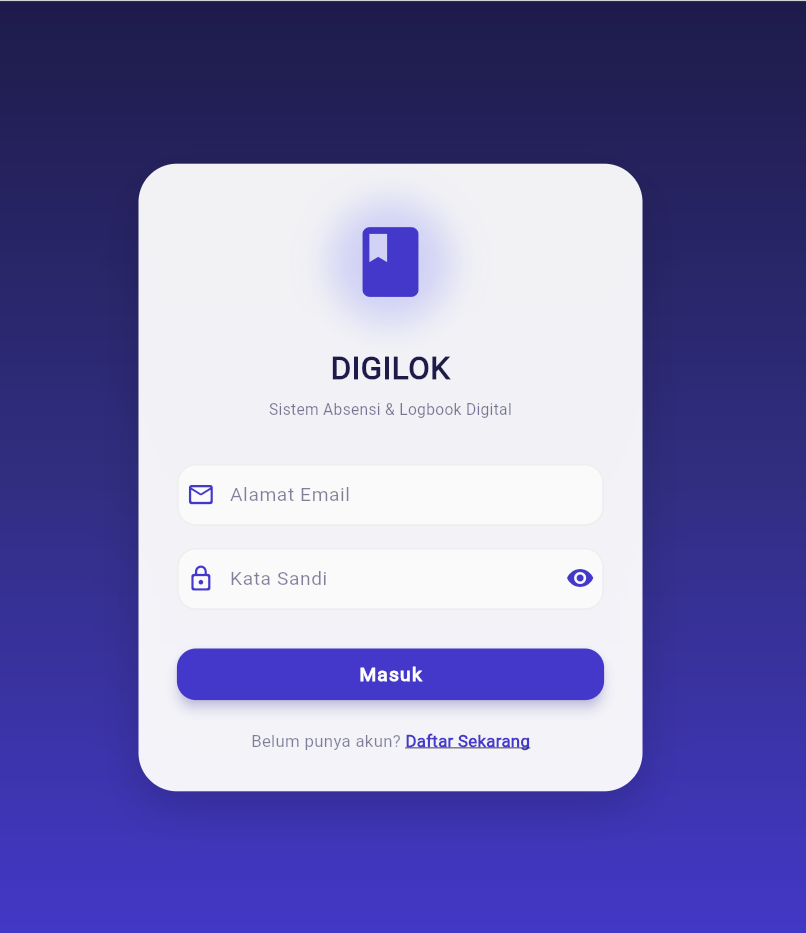

Aplikasi logbook digital dan absensi berbasis GPS untuk peserta magang dengan monitoring mentor realtime.

DIGILOK merupakan aplikasi mobile berbasis Flutter yang digunakan untuk pengelolaan logbook kegiatan magang secara digital.
Sistem dilengkapi absensi GPS, validasi mentor, monitoring aktivitas peserta dan laporan otomatis.
Admin, mentor dan peserta magang.
Validasi lokasi berdasarkan radius.
Pencatatan aktivitas harian digital.
Verifikasi logbook peserta magang.
Pemantauan progres realtime.
Rekap kegiatan otomatis.